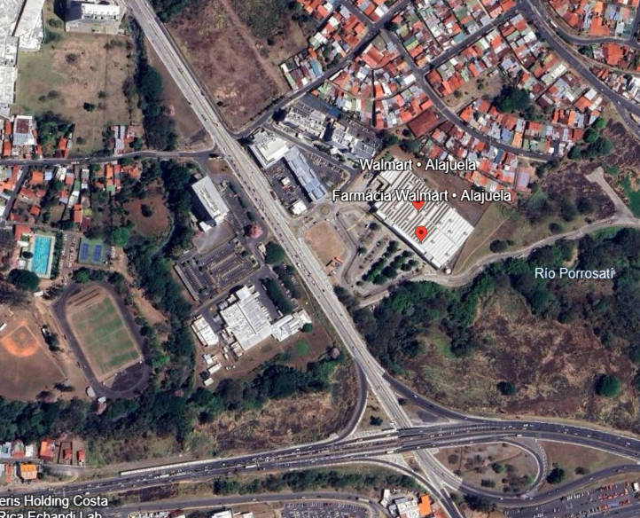
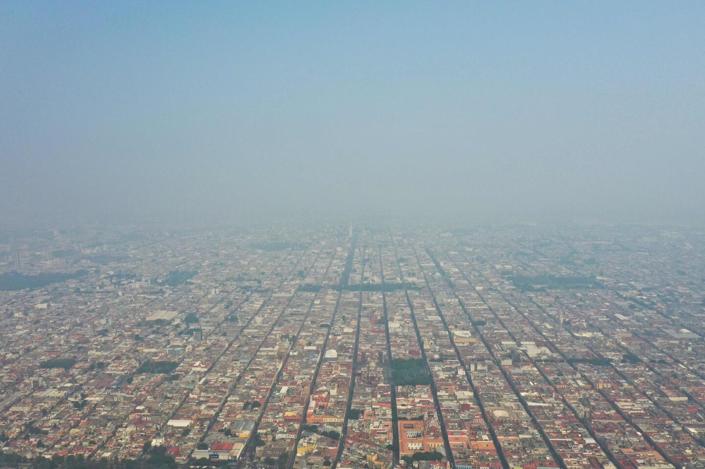

The Main Problem of a Car Dependent Society

Introduction
I live in Costa Rica. Since i was little kid, probably around seven or eight years old, i used to see the streets of my town, Heredia, and they completely lacked of sidewalks. This was a recurring problem in the town and that became so ingrained in the culture that people started calling my town "Heredia por media calle". It doesn't have a direct translation, but it means walking in the middle of the street. Some of the reasons of why the sidewalks kind of dissapeared there was because in the colonial era the houses were build very close to the street, and the streets were very narrow. This caused to the sidewalks to be very narrow, and in some cases, they were not even there. This problem started growing with the arrival of cars, and the government started to build more car friendly roads.
This is kind of interesting, but also a very worrying problem that the government needs to fix for obvious reasons. You can't let this problem grow more because it will be way way harder to fix later. This is like getting a bug in your code infrastructure and letting it grow in a way that would require stupid amounts of work, that you could have avoided if you just fixed it earlier. This is something similar to what happened in my town.
However, as the time passed and i grew older, i continued to see this problem not only in my hometown, but also in other towns and cities in Costa Rica. It was always something that bugged me because i wanted to walk, i liked to walk. There was obviously some places where i could walk, but it wasn't a pleasure to walk there. In some places, i had to go and walk in the middle of the street.
Some years ago, about two or three years ago, i started to investigate deeply this problem and found an interesting term: Car-centrism. This referes to the tendency of cities and towns, all around the world, to prioritize car infrastructure over pedestrian infrastructure. This was exactly what i was seeing in Costa Rica. So, i will explain with some examples and some data, why this is a problem and how it affects the people that live in cities.

The concept
Based on wikipedia article, can dependecy can be described as the tendency of some cities and governments to prioritize car infrastructure over other transportation methods like bikes, trains, tramlines, etc. This often involves big cities to build very wide roads and big parking lots, while ignoring the main purpose of a city: people living in there and walking.
Having a car centric city is problematic. First of all, if you don't have a car you will find it hard to do very simple activities like going to shop for groceries, because walking from your house to the supermarket is not a viable options. In small towns, you could have small stores around your location, which is pretty common in Costa Rica (pulperías), but in big cities, you will find that the stores are very far away from your house. This is in part because of the car centric infrastructure. Since cities are build for cars and not for people, then normally you will find that, in order to get there, you would need to go through a main road, which is not a good option for pedestrians. Public transport is also not an option, since bus stops and train stations are also very far away from your house and the store.
Another problem is the noise. Cars are noisy, very noisy, and also very polluting. Cities with a lot of people and, therefore, more cars, you would see and smell Smog. This is a common problem in countries like Mexico, China, United States, among others.
The Lane Problem: Braess's paradox
Many people might think that building more lanes in the roads will reduce traffic problems drastically, however, this couldn't be more wrong. This is a common misconception that many people have, and it is called the Braess's paradox. Adding more lanes would not fix traffic issues, but rather make them worse. Braess's paradox is a concept in transportation theory which states that adding extra capacity to a network, such as a road system, can sometimes lead to increased overall congestion. This counterintuitive phenomenon occurs because individual drivers, seeking to minimize their own travel time, may inadvertently create bottlenecks or inefficiencies in the system. As a result, the overall performance of the network can degrade, making travel times longer for everyone.
Explanation
Braess's paradox happens because when a new road or lane is added, drivers tend to change their routes to take advantage of the new option, aiming to minimize their own travel time. However, this individual optimization does not account for the collective impact on the traffic system. As more drivers switch to the new route, it can create bottlenecks at intersections or merge points, leading to increased congestion overall. This is the intuitive explanation: what is good for an individual driver may not be good for the system as a whole.
Mathematically, Braess's paradox can be explained using game theory and network flow models. In a traffic network, each driver seeks to minimize their own travel time, which can be represented as a Nash equilibrium. When a new road is added, the equilibrium shifts as drivers redistribute themselves across the network. However, this new equilibrium may result in a higher total travel time for all drivers compared to the original configuration. This counterintuitive result arises because the added road changes the cost functions of the network, leading to inefficiencies in the overall system.
For example, consider a simple network with two routes between points A and B. If a new shortcut is introduced, drivers may flock to it, causing congestion on the shortcut and the connecting roads. The total travel time for all drivers increases, even though the new road was intended to reduce it. This demonstrates how individual decision-making can lead to suboptimal outcomes for the group.
How to Make a Good city: a comprehensive guide
To make a good city, we need to take into account that the city needs to be designed for human beings, people. Creating more highways and more parking lots will create a good city, but rather a smog filled city. There are many cities in the world that are examples of planned, good and walkable cities. I like to take as examples a lot of european cities. For example, Amsterdam.
Amsterdam is often cited as a prime example of a well-planned, walkable city due to its thoughtful urban design and prioritization of people over cars. One of the key features of Amsterdam is its extensive network of pedestrian-friendly streets and pathways. The city has invested heavily in creating spaces where people can walk safely and comfortably, with wide sidewalks, pedestrian-only zones, and well-maintained public spaces. This makes it easy for residents and visitors to navigate the city on foot.
Another reason Amsterdam excels as a walkable city is its integration of alternative transportation methods, such as bicycles and public transit. The city is famous for its cycling culture, with dedicated bike lanes and infrastructure that make cycling a convenient and safe option for commuting. This reduces the reliance on cars and helps to create a more pleasant environment for pedestrians. Additionally, Amsterdam's public transportation system, including trams, buses, and trains, is efficient and accessible, further reducing the need for car-centric infrastructure.
Amsterdam's compact and mixed-use urban layout also contributes to its walkability. The city is designed with a focus on proximity, meaning that essential services, shops, schools, and recreational areas are often within walking distance of residential neighborhoods. This reduces the need for long commutes and encourages people to walk or bike for their daily activities. The city's historic canals and charming architecture also add to the appeal of walking, making it an enjoyable experience rather than a chore.

Furthermore, Amsterdam has implemented policies to limit car usage in the city center, such as restricted parking and car-free zones. These measures not only reduce traffic congestion but also improve air quality and create a safer environment for pedestrians. The city has also prioritized green spaces, such as parks and gardens, which provide residents with areas to relax and enjoy nature within walking distance of their homes.
In summary, Amsterdam's success as a walkable city can be attributed to its pedestrian-friendly infrastructure, emphasis on alternative transportation, compact urban design, and policies that prioritize people over cars. These elements work together to create a city that is not only functional but also enjoyable to live in and explore on foot.
Car Dependency as a Social Problem
In the book "Social Change and Sustainable Transport" by William R. Black, the author discusses the social implications of car dependency and its impact on communities. This is my recommended reading to complement this article. The title of this section is based on chapter fourteen, which has the same name.
Social Isolation
Car dependency can lead to social isolation by reducing opportunities for community interaction. In car-centric cities, people often travel alone in their vehicles, bypassing the chance to engage with neighbors or participate in spontaneous social interactions. This contrasts with walkable cities, where public spaces and pedestrian-friendly environments encourage social connections and foster a sense of community.
Economic Inequality
Car dependency exacerbates economic inequality by placing a financial burden on individuals who cannot afford a car. Public transportation options are often limited or unreliable in car-centric cities, leaving low-income individuals with fewer opportunities to access jobs, education, and essential services. This creates a cycle of disadvantage that is difficult to break.
Health Impacts
The reliance on cars contributes to sedentary lifestyles, which are linked to various health issues such as obesity, diabetes, and cardiovascular diseases. Additionally, car-centric cities often lack green spaces and safe walking or cycling paths, further discouraging physical activity. The air pollution caused by car emissions also poses significant health risks, particularly for vulnerable populations like children and the elderly.
Environmental Justice
Car dependency disproportionately affects marginalized communities, as highways and major roads are often constructed through low-income neighborhoods. This leads to increased exposure to noise and air pollution, reduced property values, and the displacement of residents. These communities bear the brunt of the environmental and social costs of car-centric infrastructure, highlighting issues of environmental injustice.
Loss of Public Space
In car-dependent societies, a significant amount of urban land is allocated to roads and parking lots, reducing the availability of public spaces for recreation, social gatherings, and cultural activities. This prioritization of cars over people diminishes the quality of life and limits opportunities for community engagement.
Generational Impact
Car dependency shapes the way future generations perceive and interact with their environment. Children growing up in car-centric cities may have limited access to safe outdoor spaces, reducing their opportunities for play and exploration. This can impact their physical and mental development, as well as their understanding of sustainable urban living.

Conclusion and some lessons
In conclusion, car dependency is a complex issue that affects various aspects of society, including social interactions, economic inequality, health, environmental justice, public space availability, and generational impact. Addressing these challenges requires a shift in urban planning priorities towards creating walkable, inclusive cities that prioritize people over cars. By fostering community engagement and promoting alternative transportation options, we can work towards a more sustainable and equitable future.
To make these changes, first of all, we need to fix some misconceptions that are mentioned in the article, like adding more lanes will not fix the traffic problems. We need to educate people about the benefits of walkable cities and how they can improve drastically quality of life.